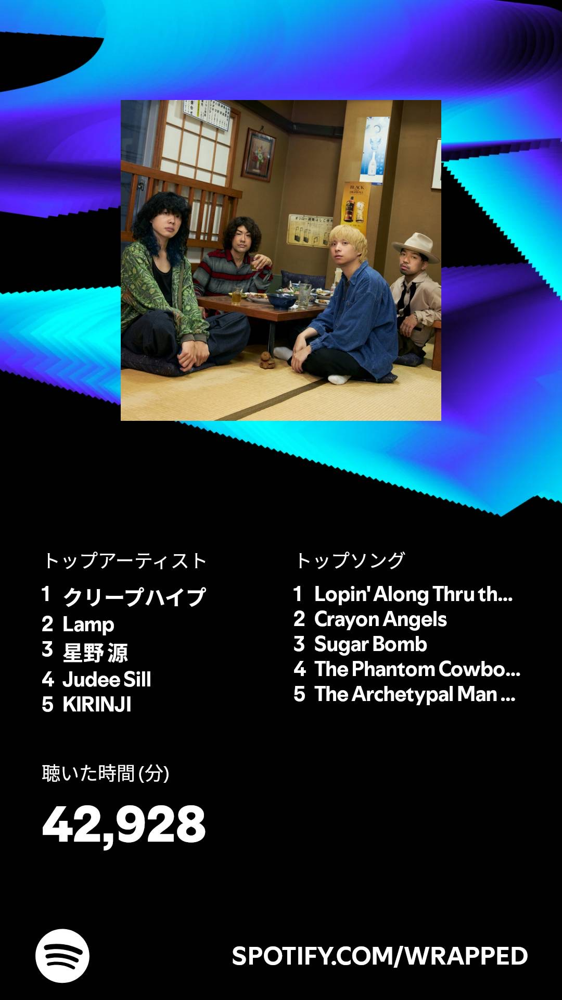
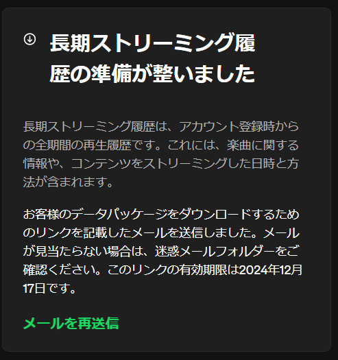
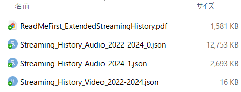
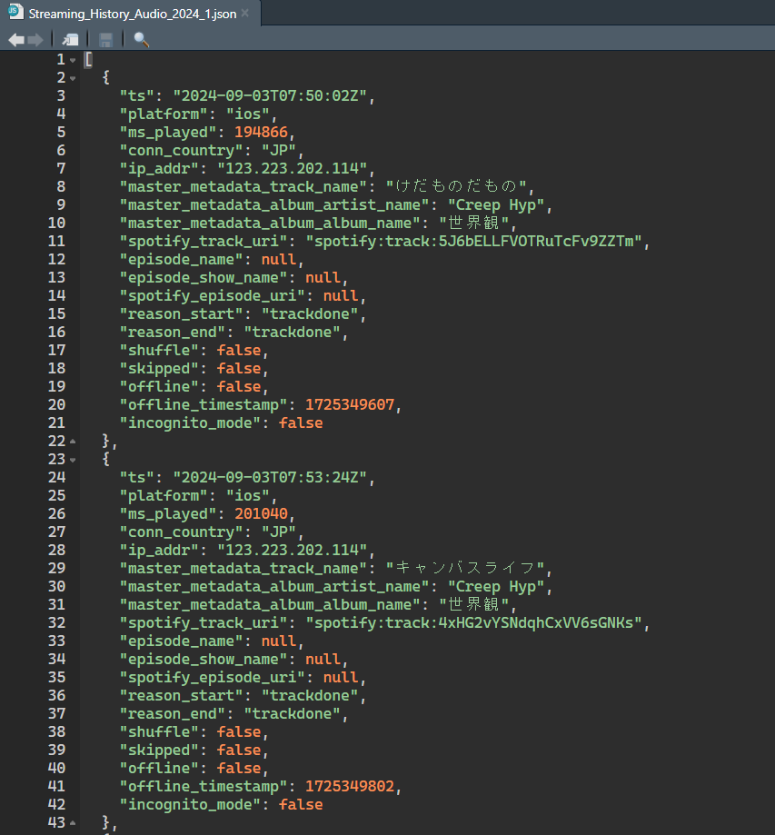
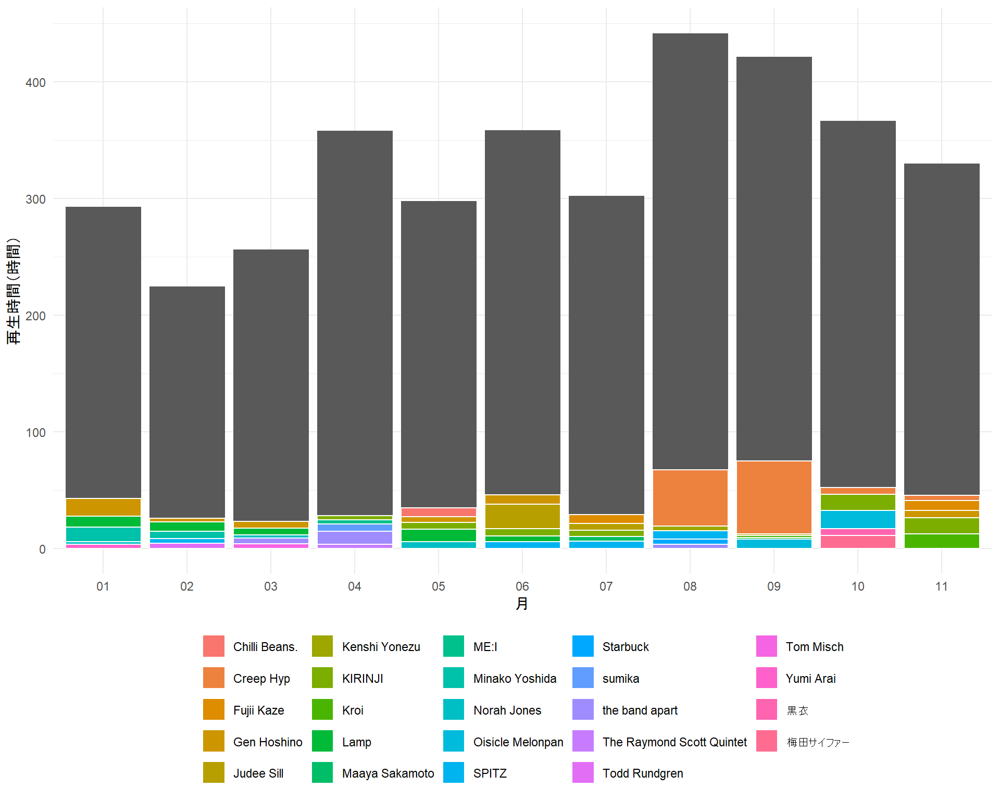
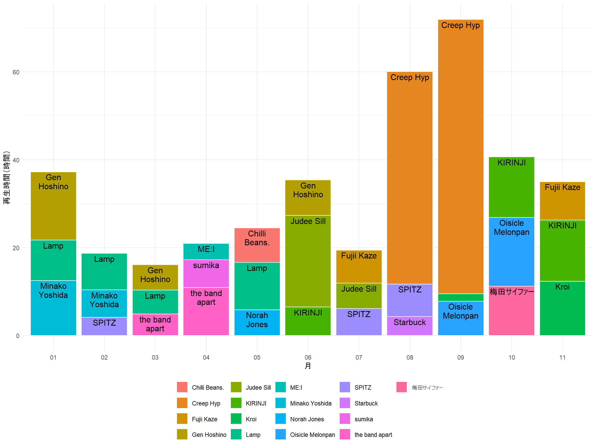

pacman::p_load(tidyverse,
jsonlite, # jsonファイルの読み込み
lubridate, # タイムスタンプの処理
ggfittext # グラフにテキストを追加
)はじめに
年末になるとSpotifyが1年聴いた音楽のまとめを教えてくれる。割と楽しみにしているあれを自力でやってみよう。
今回は2024年1月から11月の聴取歴を可視化し、ついでに今年の音楽思い出話をする。

データの取得
申請
Spotifyでは、お願いするとストリーミング履歴を提供してくれる。
Spotifyアカウントのプライバシーのページにアクセスして、「お客様のデータのダウンロード」から「長期ストリーミング履歴」の申請をする。

最大30日間かかるとのことだけど、私は寝て起きたら届いていた。
ダウンロード
ダウンロードしたzipファイルを開くとこんな感じ。

変数の説明用のpdfファイル、楽曲情報のjsonファイル、ビデオ情報（動画コンテンツ？中身見たけどよくわからず）のjsonファイルが入っている。
私はSpotifyの登録が2022年、本格的に使い始めたのは2023年なので、これくらいのデータサイズ。
もっと量が多いと、ダウンロードまでに時間がかかるのかも？
jsonってなんだ？
jsonファイルをよく知らないので、とりあえず開いてみる。

なるほど、構成要素はデータフレームと似ていて直感的。
データの読み込み
今回使うパッケージはこちら。
jsonliteパッケージを使ってデータを読み込む。
# データが分割されているのでそれぞれ読み込み
data1 <- fromJSON("Spotify Extended Streaming History/Streaming_History_Audio_2022-2024_0.json")
data2 <- fromJSON("Spotify Extended Streaming History/Streaming_History_Audio_2024_1.json")いつものデータフレームの感じで読み込めている！
head(data2) ts platform ms_played conn_country ip_addr
1 2024-09-03T07:50:02Z ios 194866 JP 123.223.202.114
2 2024-09-03T07:53:24Z ios 201040 JP 123.223.202.114
3 2024-09-03T07:55:54Z ios 150013 JP 123.223.202.114
4 2024-09-03T07:59:01Z ios 187680 JP 123.223.202.114
5 2024-09-03T08:02:18Z ios 196560 JP 123.223.202.114
6 2024-09-03T08:05:48Z ios 210693 JP 123.223.202.114
master_metadata_track_name master_metadata_album_artist_name
1 けだものだもの Creep Hyp
2 キャンバスライフ Creep Hyp
3 テレビサイズ - TV Size 2'30 Creep Hyp
4 誰かが吐いた唾が キラキラ輝いてる Creep Hyp
5 愛の点滅 Creep Hyp
6 リバーシブルー Creep Hyp
master_metadata_album_album_name spotify_track_uri
1 世界観 spotify:track:5J6bELLFVOTRuTcFv9ZZTm
2 世界観 spotify:track:4xHG2vYSNdqhCxVV6sGNKs
3 世界観 spotify:track:5artCEngkKKpKhcbr7Ia3s
4 世界観 spotify:track:5mbUBBzsJY2JsE4Qj2GI63
5 世界観 spotify:track:3BlYaUK1Aj8G75fiVUkgfl
6 世界観 spotify:track:66vlDAwwNitDMwARA8lejR
episode_name episode_show_name spotify_episode_uri reason_start reason_end
1 <NA> <NA> <NA> trackdone trackdone
2 <NA> <NA> <NA> trackdone trackdone
3 <NA> <NA> <NA> trackdone trackdone
4 <NA> <NA> <NA> trackdone trackdone
5 <NA> <NA> <NA> trackdone trackdone
6 <NA> <NA> <NA> trackdone trackdone
shuffle skipped offline offline_timestamp incognito_mode
1 FALSE FALSE FALSE 1725349607 FALSE
2 FALSE FALSE FALSE 1725349802 FALSE
3 FALSE FALSE FALSE 1725350003 FALSE
4 FALSE FALSE FALSE 1725350153 FALSE
5 FALSE FALSE FALSE 1725350341 FALSE
6 FALSE FALSE FALSE 1725350538 FALSEデータの整形
タイムスタンプ列tsはUTC（協定世界時）なので、日本時間に変換する。 今回は、lubridateパッケージを使う。
# とりあえず使ってみる
as_datetime("2024-09-03T07:50:02Z", tz = "Asia/Tokyo")Date in ISO8601 format; converting timezone from UTC to "Asia/Tokyo".[1] "2024-09-03 16:50:02 JST"かしこい！日本時間に変換して、月・日付・時間に分解してみる。
data2 %>%
filter(ms_played >= 60000) %>%
mutate(ts = as_datetime(ts, tz = "Asia/Tokyo"), # JST勝手に消えててラッキー！
month = str_sub(ts, start = 6, end = 7), # 適当ですみません
date = str_sub(ts, start = 1, end = 10),
time = str_sub(ts, start = 12, end = 20)) %>%
select(ts, month, date, time) %>%
head()Date in ISO8601 format; converting timezone from UTC to "Asia/Tokyo". ts month date time
1 2024-09-03 16:50:02 09 2024-09-03 16:50:02
2 2024-09-03 16:53:24 09 2024-09-03 16:53:24
3 2024-09-03 16:55:54 09 2024-09-03 16:55:54
4 2024-09-03 16:59:01 09 2024-09-03 16:59:01
5 2024-09-03 17:02:18 09 2024-09-03 17:02:18
6 2024-09-03 17:05:48 09 2024-09-03 17:05:48これを踏まえて、いろいろ調整してデータを整形。
data <- bind_rows(data1, data2) %>%
filter(ms_played >= 60000, # 1分（=60000ミリ秒）以上聴いた曲のみ抽出
is.na(episode_name) # ポッドキャストは除外
) %>%
mutate(ts = as_datetime(ts, tz = "Asia/Tokyo"), # JSTに変換
month = str_sub(ts, start = 6, end = 7),
date = str_sub(ts, start = 1, end = 10),
time = str_sub(ts, start = 12, end = 20)) %>%
rename(artist = master_metadata_album_artist_name) %>% # 列名長いので変換
filter(date >= "2024-01-01", date < "2024-12-01") # 2024年1-11月だけ抽出Date in ISO8601 format; converting timezone from UTC to "Asia/Tokyo".このコードをコピペして分析しちゃおう。
可視化
この時期はこのアーティストをよく聴いたな～という体感があるので、月ごとでよく聴いたアーティストを調べてみる。
# 描画用データ
data_plt <- data %>%
# アーティストごとの月合計再生時間
group_by(month, artist) %>%
summarise(ms_played_month_artist = sum(ms_played),
.groups = "drop") %>%
# 月合計再生時間
group_by(month) %>%
mutate(ms_played_month = sum(ms_played_month_artist)) %>%
ungroup() %>%
arrange(desc(ms_played_month_artist)) %>%
# 単位をミリ秒から時間に変換
mutate(hour_played_month = ms_played_month / 3600000,
hour_played_month_artist = ms_played_month_artist / 3600000) %>%
# 月ごとに
group_by(month) 毎月の合計再生時間と、よく聴いたアーティストのトップ5を可視化してみる。
data_plt %>%
slice(1:5) %>% # 再生回数多い順に5行
ggplot() +
geom_col(aes(x = month, y = hour_played_month)) +
geom_col(aes(x = month, y = hour_played_month_artist,
fill = artist)
,color = "white") +
labs(x = "月", y = "再生時間（時間）", fill = "") +
theme_minimal() +
theme(legend.position = "bottom") # theme_minimal()より後に持ってこないと適用されない
いろいろ聴いている。色分けしてもアーティストがよくわからないので、トップ3に絞ってテキストを追加する。
data_plt %>%
slice(1:3) %>%
ggplot(aes(x = month, y = hour_played_month_artist,
fill = artist,
label = artist)) +
geom_col(color = "white") +
geom_bar_text(reflow = TRUE, position = "stack") + # 棒グラフにテキストを追加
labs(x = "月", y = "再生時間（時間）", fill = "") +
theme_minimal() +
theme(legend.position = "bottom")
いい感じです。本当は再生回数が多い順に積み上げたかった。
おわりに
月ごとトップ3アーティストの17組のうち、6組は今年からちゃんと聴き始めたことになる。ずっと好きなアーティストがいつつ、新しい音楽にも出会えているのがわかって良かった。
これだけ情報量の多いデータなので、いろいろなことができそうです。友達のも見てみたい。